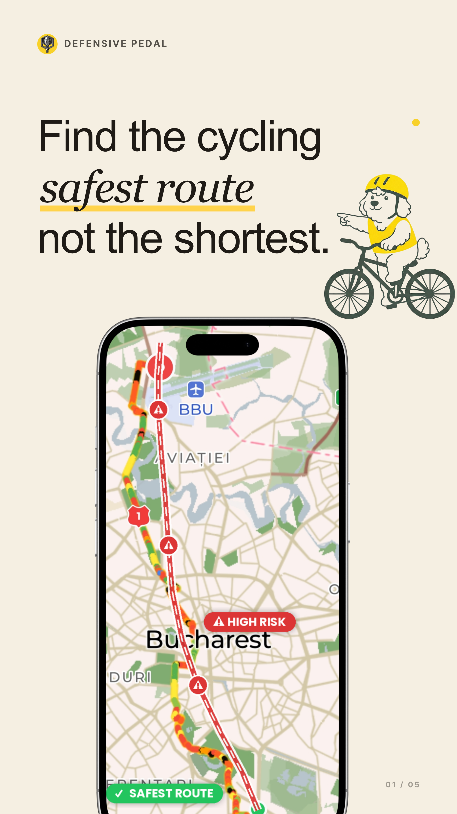
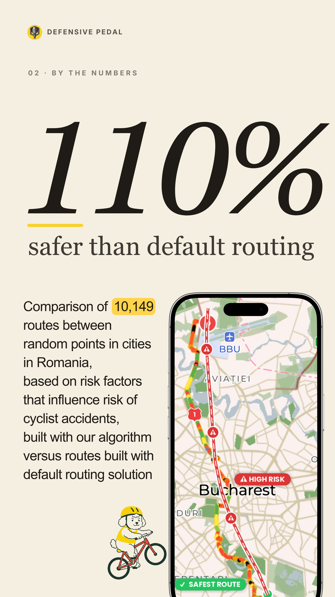
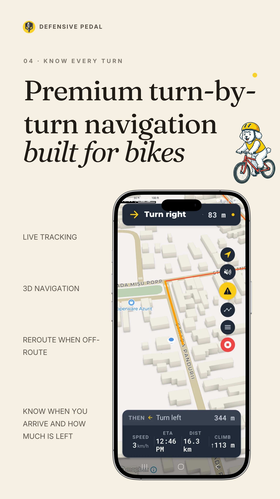
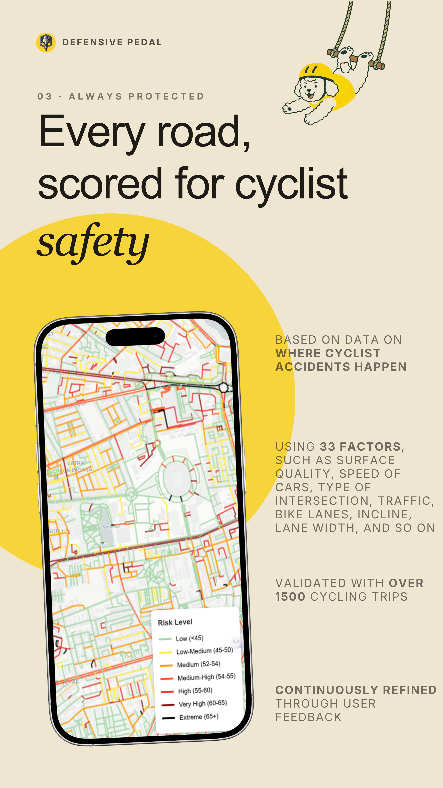

6 : 1
Nu ești singur
Șase oameni vor să pedaleze pentru fiecare care o face deja. Frica de trafic, nu lipsa de interes, îi oprește.
Defensive Pedal îți planifică drumul ocolind traficul rapid, intersecțiile dificile și zonele cu portiere deschise, folosind peste 100 de factori de risc pe fiecare stradă. În medie, ruta e doar cu 5% mai lungă decât cea mai scurtă.
Gratuit · iPhone și Android · 31 de țări europene
5,0 pe Google Play · peste 3.200 de instalări · Colaborăm cu Banca Mondială pe analize de ciclism pentru orașe

Pentru fiecare om care merge cu bicicleta, alți șase ar face-o, dacă străzile ar părea mai liniștite. Hărțile obișnuite te trimit pe drumurile cele mai rapide. Noi te trimitem pe cele liniștite.
Șase oameni vor să pedaleze pentru fiecare care o face deja. Frica de trafic, nu lipsa de interes, îi oprește.
Decesele rutiere din Europa au scăzut cu 24% într-un deceniu. Cele ale bicicliștilor aproape deloc: doar 5%.
România are cea mai mare rată a deceselor în rândul bicicliștilor din Uniunea Europeană. Începem acolo unde contează cel mai mult.
Am comparat rutele noastre cu indicațiile pentru bicicletă din Google Maps pe 10.149 de trasee între puncte aleatorii din orașe românești.
Ale noastre au avut risc mai mic în 99 din 100. În medie, sunt
Măsurat ca risc cumulat modelat de-a lungul fiecărei rute, folosind peste 100 de factori de risc rutier pe segment. În medie, doar cu 5% mai lungi decât ruta cea mai scurtă.
Un scor de risc contează doar dacă se potrivește cu ce se întâmplă pe străzi. Așa că l-am verificat cu registrele naționale de accidente din cinci țări și publicăm și ce am greșit.
Măsurate în 2.034 de puncte de numărare, ca să comparăm accidentările per biciclist, nu doar pe unde merg cei mai mulți.
Germania, Elveția, Belgia, Franța și Spania. Niciuna dintre aceste date nu a fost folosită la construirea modelului.
Aproximativ o accidentare gravă la 5 milioane de drumuri, față de una la 2 milioane pe străzile evaluate „Risc ridicat”.
E un ghid, nu o garanție. Mersul cu bicicleta e sigur: scorurile noastre compară străzile între ele, nu vreun drum anume. Datele despre accidente vin din surse naționale independente; analiza e a noastră.

Fiecare stradă de pe hartă are deja o evaluare a riscului (Mai sigur, Obișnuit sau Risc ridicat), construită din peste 100 de factori precum viteza și volumul traficului, intersecțiile și zonele cu portiere deschise.

Ocolim drumurile aglomerate și intersecțiile dificile și îți explicăm de ce ruta sigură e mai sigură. În medie, e doar cu 5% mai lungă decât cea mai scurtă.

Gropile, încadrările ostile și intersecțiile riscante sunt semnalate înainte să ajungi la ele, iar dacă vremea cere echipament, primești o avertizare.
Alte aplicații tratează ciclismul ca pe o variantă mai lentă a condusului. Noi îl tratăm ca pe o problemă în sine, cu propriile date, propriile riscuri și propria soluție.
E caniculă? Primești cea mai umbroasă și răcoroasă rută spre casă. Face parte din Premium, alături de rutarea pentru e-bike, rutele salvate nelimitate și navigația offline.
Alege cât de mult să prioritizezi siguranța față de viteză. Vrei ruta absolut cea mai sigură? Sau un echilibru? Setezi o dată, schimbi oricând.
E-bike sau clasică? Cu pante sau doar pe plat? Ocolișuri pitorești sau drum direct? Spune-i aplicației o dată și fiecare rută se adaptează.
Ai văzut o groapă, o intersecție dubioasă sau o bandă plină de cioburi? Atinge ca să raportezi. Ceilalți bicicliști văd imediat.
Analitica este opt-in și conformă GDPR. Traseele tale sunt ale tale. Nu vindem niciodată date personale. Punct.
După fiecare drum, vezi CO₂-ul evitat și minutele de viață câștigate, estimate cu modelul de sănătate al OMS atunci când drumul înlocuiește o călătorie cu mașina.
Am fost uimit că pot să mă simt cu adevărat în siguranță pedalând prin București.
Îmi place că se concentrează pe găsirea unor rute mai sigure și ia în considerare factori reali de risc rutier, în loc să te trimită pur și simplu pe drumul cel mai rapid.
Îmi place că ține cont de factori practici precum traficul, pericolele și vremea și te avertizează dacă trebuie să te echipezi pentru vreme.
Programe și colaborări
Apariții în presă
Așa că am construit aplicația de care aveam nevoie amândoi. Victor Rotariu, biciclist pasionat care a livrat cel mai mare chatbot din România, a fondat Defensive Pedal și a scris motorul de rutare și ambele aplicații. Oana Leta, fost Country Manager U.K. pentru iRobot, cu o vastă experiență în politici urbane, conduce parteneriatele și colaborarea cu orașele.
Modelul nostru de siguranță a fost rafinat cu feedback de la peste 2.400 de contributori: bicicliști care au testat algoritmul la evenimente, au răspuns la sondajele noastre și au modelat ceea ce aplicația face bine.
Da. Rutarea de bază pentru siguranță este complet gratuită — fiecare drum, în fiecare zi. Premium opțional adaugă Cool Routing, rutare pentru e-bike, rute salvate nelimitate și navigație offline, dar navigația care pune siguranța pe primul loc — cea care ne face diferiți — rămâne gratuită pentru toată lumea.
Nu prea. În medie, rutele noastre sunt doar cu 5% mai lungi decât ruta cea mai scurtă. La un drum de 4 km, asta înseamnă cam 200 de metri.
Da. Îți creezi un cont gratuit când deschizi aplicația prima dată.
Da. E construită pentru mersul de zi cu zi prin oraș, inclusiv naveta. Rutarea pentru e-bike face parte din Premium.
Defensive Pedal este optimizată să fie ușoară. Consumul de baterie este comparabil cu cel al altor aplicații de navigație GPS. Pentru drumuri lungi recomandăm un acumulator extern sau un încărcător pe ghidon — la fel ca pentru orice aplicație cu instrucțiuni pas-cu-pas.
Dacă ești în Europa, da — Defensive Pedal este disponibilă în 31 de țări: toate țările UE plus Regatul Unit, Elveția, Norvegia și Islanda. Pentru că folosim datele OpenStreetMap, motorul se poate extinde și mai departe. Granularitatea scorurilor de siguranță depinde însă de calitatea datelor locale. Marile orașe europene au cea mai bună acoperire în prezent, iar îmbunătățim peste tot pe măsură ce comunitatea noastră crește.
Da! Defensive Pedal este acum disponibilă în App Store — aceeași rutare care pune siguranța pe primul loc, ca pe Android. Mulțumim tuturor celor care s-au înscris pe lista de așteptare și ne-au ajutat să ajungem aici.
Modelul nostru de siguranță folosește peste 100 de factori de risc rutier pe segment, bazându-se pe cercetări oficiale europene în siguranța rutieră, date de infrastructură OpenStreetMap și pericole raportate de comunitate. Modelul a fost rafinat cu contribuția a peste 2.400 de oameni și testat pe 10.149 de rute în orașe românești — generând rute de 2,1 ori mai sigure decât rutarea standard, măsurat ca risc cumulat modelat. Am verificat modelul și cu registrele oficiale de accidente din cinci țări europene: accidentările grave sunt mai frecvente pe drumurile pe care le evaluează ca fiind cu risc ridicat.
Confidențialitate prin design. Colectăm doar ce este necesar pentru a-ți oferi rute sigure. Toată analitica este opt-in, conformă GDPR și agregată/anonimizată pentru orice partajare cu parteneri instituționali. Nu vindem niciodată date personale.
Am clasat 117 orașe europene după riscul pentru bicicliști, stradă cu stradă. Găsește-l pe al tău, apoi trimite-l cuiva care o să vrea să se contrazică pe tema asta.
Vezi clasamentul orașelor →Instalează gratuit din Google Play sau App Store. Fără abonament. Fără card. Doar rute mai sigure.
Android și iOS · Gratuit · Peste 100 de factori de siguranță · Rute de 2,1 ori mai sigure
Știi pe cineva care spune „Aș merge cu bicicleta, dar…”?